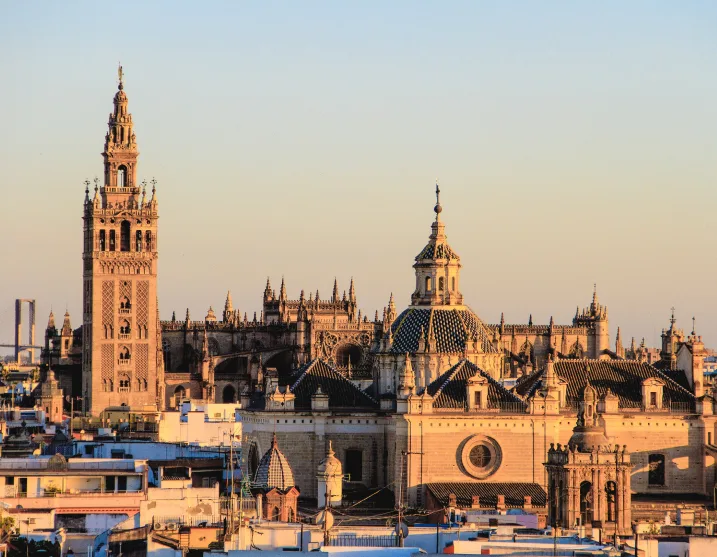
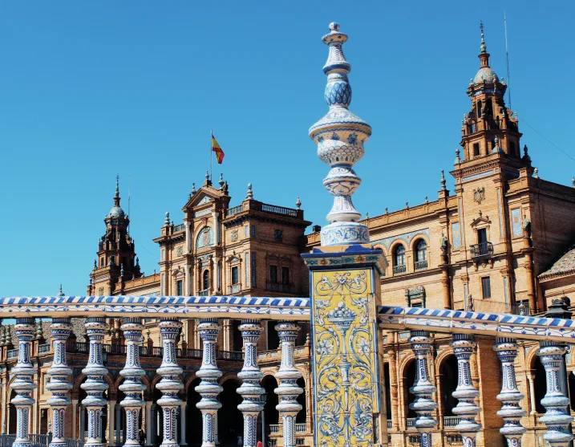
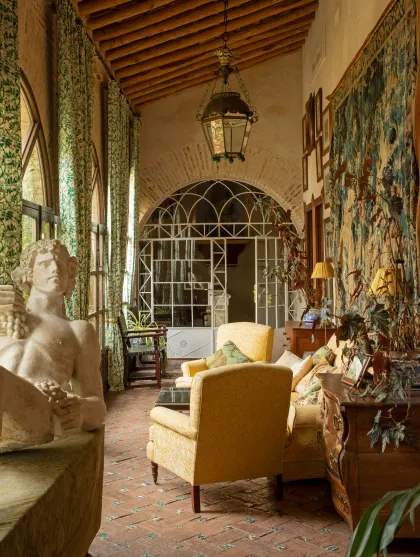

TRIP DESCRIPTION (MARCH 22-25, 2024 / 3 NIGHTS)
Seville is a city of bold and brilliant layers. Once the door to the Spanish empire’s transatlantic trade, the capital of Andalucia has seen many reigns — Phoenicians, Romans, Visigoths, Moors, and Christians, to name a few — impressing Seville with scents of orange blossoms, the sounds of flamenco, and an vibrant architectural style known as Mudejar. “Sevilla tiene un color especial,” goes the popular song — “Seville has a special color.” The city embodies a sensory experience that has become the image of Spain sold all over the world: the fiery bullfighter, the romantic guitarist, the tapas crawlers. All are a part of what make up this storybook city running along the Guadalquivir River, where life is lived slowly and in the winding cobblestoned streets.
Our 3-night stay will take place during the preamble for Semana Santa, or Holy Week, and through Palm Sunday. Seville’s particularly elaborate celebration attracts visitors from all over the world. Devout church brotherhoods called hermandades carry wooden figures of the Virgin Mary and depictions of Christ’s crucifixion through the streets. Weighing upward of two tons, these opulent displays are carried on the backs of burly gentlemen and accompanied by hundreds or even thousands of decorated followers with candles, bowel-shaking horns and drums, potent incense, and ornate pageantry. We will be able to observe these processions from the balconies of private homes that have been opened specifically for us having seen the preparatory process in the preceding days.
Though high-level gastronomy is in no short supply here, the allure of Seville’s culinary landscape lies far more in the quality of the raw ingredients themselves. Step outside the city into the infinite expanse of ancient Andalucian groves and you’ll see that the most important ingredient by far is the olive. Whether it’s a garlicky brined appetizer on the table or the drizzle of the grassy green oil on a morning tostada, the tiny fruit is the backbone of the country’s agricultural landscape and cuisine. Spain actually produces more olive oil than any country in the world, and Andalucia accounts for the majority of that production, much of which is pressed by cooperatives made up of small family growers.
During our journey, we will encounter this tradition by staying at a former olive press from the 15th and 16th centuries, about an hour north of Seville in the hills. Trasierra is both the family home and boutique hotel of Charlotte Scott, a Spanish-born Londoner who has been hosting friends here since the early 1990s. Its charm is in its whitewashed walls and delightfully unstructured time; you can participate in yoga with a local teacher, ride horses or hike in the trails behind the property, or, for those feeling less active, read on the terrace and lounge by the pool. Charlotte’s daughter, Gioconda Scott, trained with Argentine chef Francis Mallmann and now cooks simple dinners at Trasierra that make use of the freshest of the aforementioned raw ingredients that Seville and the surrounding area has to offer.

PRICING DETAILS
In order to confirm your reservation, a 50% non-refundable deposit is required at the time of the booking. The remaining balance will be charged 120 days prior to the beginning of the trip. For more information, please contact caravan@priorworld.com
-Double Occupancy Room (2 people in 1 room): $7,620 per person
-Single Occupancy Room (1 person in 1 room): $9,485 per person

INCLUSIONS:
-Accommodations at Trasierra, privatized for exclusive use
-All tours and admission costs throughout the itinerary
-All meals throughout the itinerary
-All transportation throughout the itinerary
-Gratuities
EXCLUSIONS:
-Airfare
-vArrival and departure transfers
-Any visa or travel requirements for entry into Spain
-Travel Insurance
-Other meals and alcoholic beverages not stated in itinerary